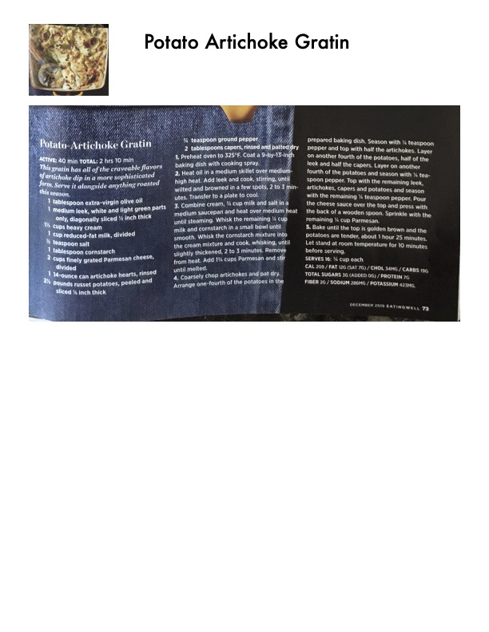

Potato Artichoke Gratin

Original cookbook page 37
This gratin has all of the craveable flavors of artichoke dip in a more sophisticated form. Serve it alongside anything roasted this season.
Prep: 40 minutes active • Cook: 1 hour 25 minutes • Total: 2 hours 10 minutes
Ingredients
- 1 tablespoon extra-virgin olive oil
- 1 medium leek, white and light green parts only, diagonally sliced ¼ inch thick
- ½ cup heavy cream
- 1 cup reduced-fat milk, divided
- ½ teaspoon salt
- 1 tablespoon cornstarch
- 2 cups finely grated Parmesan cheese, divided
- 1 (14-ounce) can artichoke hearts, rinsed and drained
- 2½ pounds russet potatoes, peeled and sliced ⅛ inch thick
- ¾ teaspoon ground pepper, divided
- 2 tablespoons capers, rinsed and patted dry
Instructions
- Preheat oven to 325°F. Coat a 9-by-13-inch baking dish with cooking spray.
- Heat oil in a medium skillet over medium-high heat. Add leek and cook, stirring, until wilted and browned in a few spots, 2 to 3 minutes. Transfer to a plate to cool.
- Combine cream, ½ cup milk and salt in a medium saucepan and heat over medium heat until steaming. Whisk remaining ½ cup milk and cornstarch in a small bowl until smooth. Whisk cornstarch mixture into cream mixture and cook, whisking, until slightly thickened, 2 to 3 minutes. Remove from heat. Add 1¼ cups Parmesan and stir until melted.
- Coarsely chop artichokes and pat dry. Layer potatoes, pepper, artichokes, leek, and capers in prepared baking dish in specified pattern, ending with potatoes on top.
- Pour cheese sauce over top and press with back of wooden spoon. Sprinkle with remaining ¾ cup Parmesan.
- Bake until top is golden brown and potatoes are tender, about 1 hour 25 minutes. Let stand 10 minutes before serving.
Recipe #37 from collection